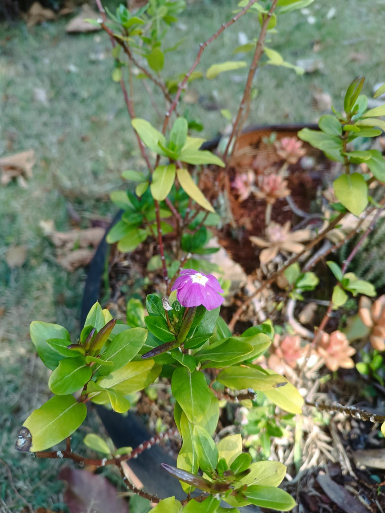

Informações da Planta
Nome científico: Catharanthus roseus
Nome popular: Vinca
Família: Apocynaceae
Origem: Madagascar e outras regiões tropicais.
Nome científico: Catharanthus roseus
Nome popular: Vinca
Família: Apocynaceae
Origem: Madagascar e outras regiões tropicais.
A Vinca é conhecida por suas propriedades medicinais e é utilizada na medicina tradicional para tratar diversas doenças. Ela também é popular na jardinagem por sua beleza e facilidade de cultivo.